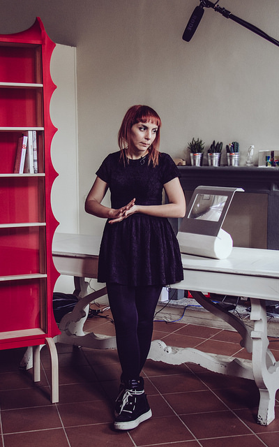

- Event Listeners

Josh Hayward
Josh Hayward is the creative director of Digital Kitchen. This is the team responsible for making interactive pianos, a beautiful airport installation showing different creatures of flight, and some of the best title sequences on TV. They specialize in creating exciting, voyeuristic experiences that play on cultural norms and human perceptions. Their free spirited approach is analytical of context, empathetic of what experience people are seeking or open to, and sensational when it comes to delivering an experience.
"It is the clarity of the idea and making the right choices in expressing it that is the most important. If you maintain that, whatever medium it takes you will be doing something that feels authentic to an audience."
-

Product Name
-

Product Name
-

Product Name
-

Product Name
“Design is a priviledge because what we are doing is that we are creating the world around us.”
This interview was conducted by Roxanne Henschke
Introduction
Thinker/Maker
Communicating Creativity
Medium + Audience
Relevancy
0:00
/
0:00